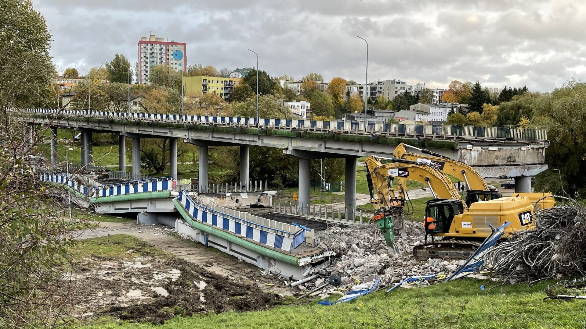

Zawalenie wiaduktu w Koszalinie
Tomasz Sobieraj
Do zawalenia północnej części wiaduktu w al. Monte Cassino w Koszalinie w ciągu drogi krajowej nr 6 doszło w czwartek ok. godz. 16 w trakcie jego prac rozbiórkowych, które rozpoczęły się 18 października i miały potrwać do początku 2022 r.
"Most się złożył szybciej niż wykonawca przewidywał"
Zastępca prezydenta Koszalina do spraw gospodarczych Andrzej Kierzek poinformował, że ulice Dąbrowskiego, Strumykowa i ścieżka rowerowa zostały zamknięte dla ruchu. Prace miały odbywać się sukcesywnie, dlatego ul. Batalionów Chłopskich była otwarta dla ruchu pieszego i kołowego. - Most się złożył szybciej niż wykonawca przewidywał. Wykonawca miał zatwierdzony cały projekt rozbiórki, organizację ruchu i wszystko realizował zgodnie z tymi dokumentami, a życie pokazało inaczej - powiedział Kierzek. Zaznaczył, że na miejscu zdarzenia jest prokurator, są wszystkie służby. Straż pożarna dokonała oględzin, rozpytując świadków i sprawdzając gruzowisko kamerą termowizyjną.
Trwają prace techników
- Z dużym prawdopodobieństwem, dochodzącym do 99 proc. nikogo nie było pod wiaduktem, nikt nie doznał uszczerbku na zdrowiu i życiu - podał Kierzek. Z kolei oficer prasowa koszalińskiej policji kom. Monika Kosiec poinformowała, że wstępne informacje wskazują, że najprawdopodobniej na tej zawalonej części wiaduktu nikogo nie było. - Tam uległ zniszczeniu pojazd, który był już wcześniej zaparkowany i w nim nikt nie przebywał. Nie możemy wykluczyć, że ktoś przechodził tym mostem. Będziemy to weryfikować, sprawdzać. Technik wykonuje oględziny. Dalsze czynności będzie nam zlecać prokuratura - zaznaczyła kom. Kosiec. Przekazała, że czynności pod nadzorem prokuratury wykonywane są w kierunku spowodowania katastrofy budowlanej i narażenia na niebezpieczeństwo utraty zdrowia i życia. Zastępca prezydenta Koszalina poinformował, że w konferencji prasowej nie uczestniczyli przedstawiciele wykonawcy robót, ponieważ prokurator zatrzymał do wyjaśnienia kierownika robót i kierownika budowy.
"Obiekt nie wytrzymał naporu"
Zastępca dyrektora Zarządu Dróg i Transportu w Koszalinie Marcin Żełabowski podkreślił, że "w momencie przekazania placu budowy, przy zatwierdzonej organizacji ruchu wszystkie czynności, wszystkie odpowiedzialności spływają na kierownika budowy". Dodał, że wykonawca realizował rozbiórkę zgodnie z przyjętą technologią. Miał on zapewniać, że "tak się rozbiera te obiekty - sukcesywnie skuwa się poszczególne przęsła". - Obiekt nie wytrzymał naporu. Nikt tego nie przewidział - mówił Żełabowski. Zamknięcie ul. Batalionów Chłopskich planowane było w kolejnych dniach, na jeden, maksymalnie półtora dnia. - Obecnie wprowadzamy pełne wygrodzenie. Zwozimy cały sprzęt, by zabezpieczyć ten obiekt dookoła, by ludzie postronni tam nie wchodzili, nie zbliżali się do tego obiektu - powiedział Żełabowski.
